Getting Started
Logging In
If you haven't logged into Puppet Kit Plus in over a month, you may be prompted to log in using a Microsoft ID. You should be able to use the 4-digit code provided with the materials as a shortcut, but otherwise will need to use the provided Microsoft Nemours PuppetKit Plus email address and password.
When you begin the PuppetKit Plus Program, you might also be prompted to “Renew Your Developer License” as shown in the picture below. This information should be entered exactly the same as the login information. Then you’re ready to go!
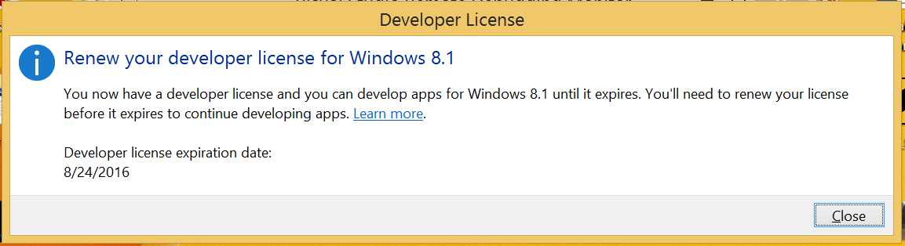
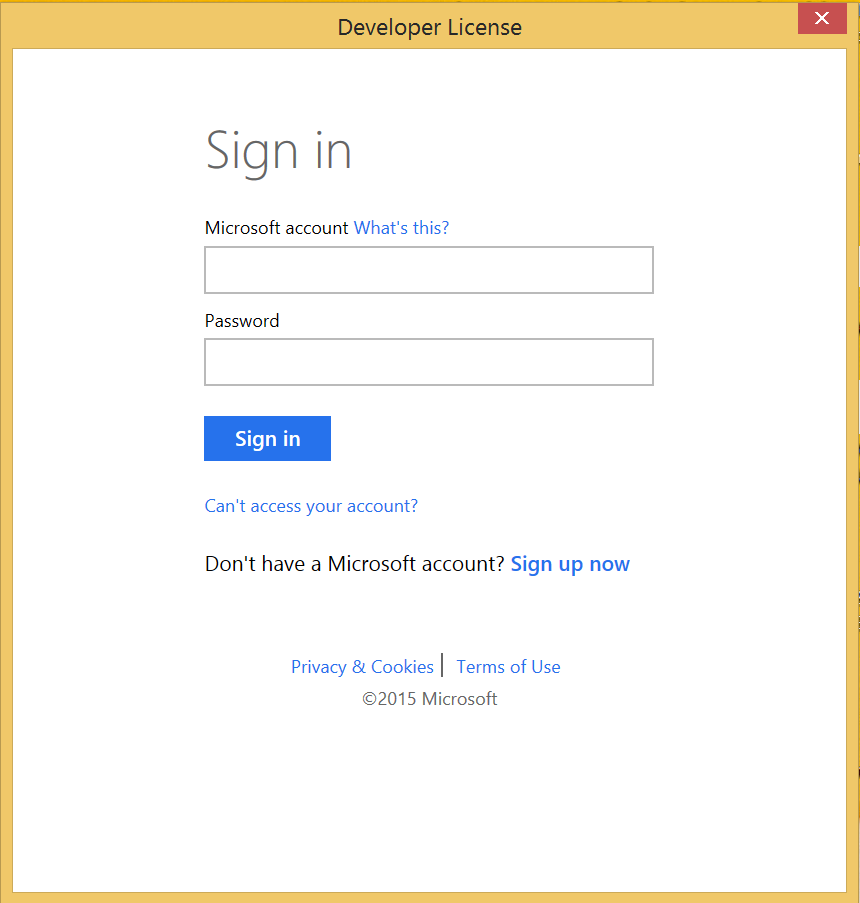
Starting From the Nemours PuppetKit Plus Tile
When you tap the “Windows” button on the tablet, you should see a Start Menu in a familiar tile layout similar to the picture shown below. Tapping the Nemours/SSI tile will start the PuppetKit Plus program.
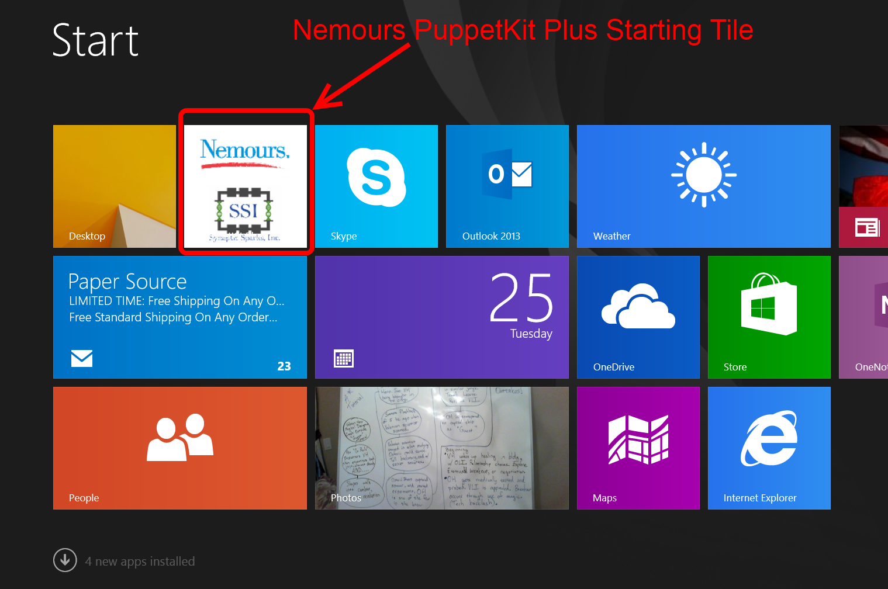
General Use
When using the Dell Venue 8 Pro tablet, a few basic operations will be handy to remember.
First, the power button pictured in the diagram below can be used to power the tablet on and off (by pushing and holding the button). It can also be used to enter sleep mode using a single, quick push. The quick push can also be used to wake the system back up from sleep mode. Note: the display will go to sleep on its own if left idle. You can wake it using a quick push of the power button.
Second, swiping from the very top of the screen to the very bottom will close any running program, including PuppetKit Plus. Swiping from the very right-side of the screen to the left will open the system and start menus (to correctly power down the tablet other than just holding down the power button). Finally, sliding from the very bottom of the screen up will unlock the secret PuppetKit Plus Menu Button if you need to restart the program for any reason.
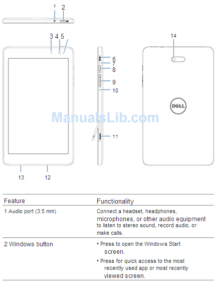
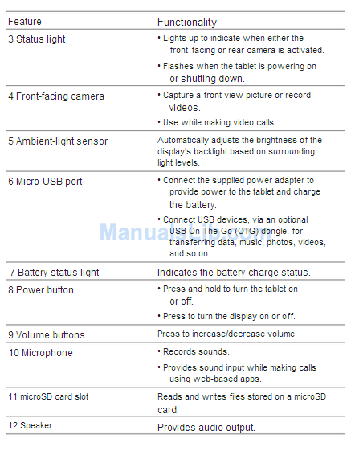
Printing
You will need to physically connect the Dell Venue 8 Pro tablet to the Dell XPS Printer using the provided cable before tapping the button to print any PuppetKit Plus materials. When you reach the part of the program that requires printing, like an authorization form or puppet body/head, please connect the tablet to the printer and then tap the “Print” button. This should allow the tablet to then select the correct printer in the menu that appears.
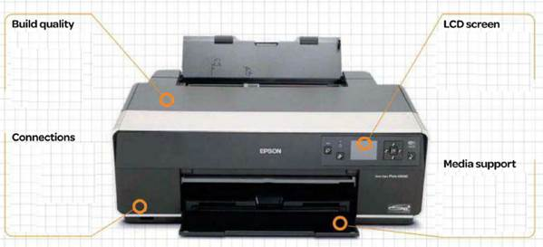
Powering Off and Storing the Tablet
When you have finished with PuppetKit Plus, hold down the Power button until you see the tablet shut down. You can then return the tablet to a charging station to make sure that the tablet is ready to use for the next time!
Creating a Puppet
Click "Create" to start customizing.
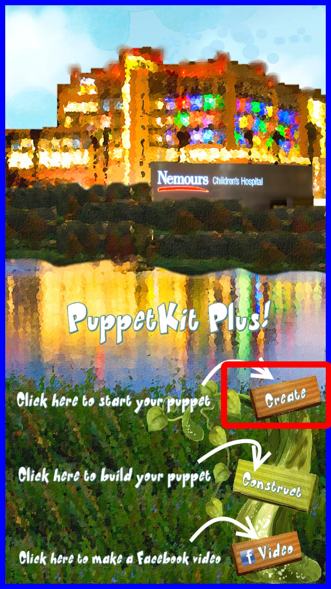
Select either a Real or a Cartoon template in Color or Black & White.
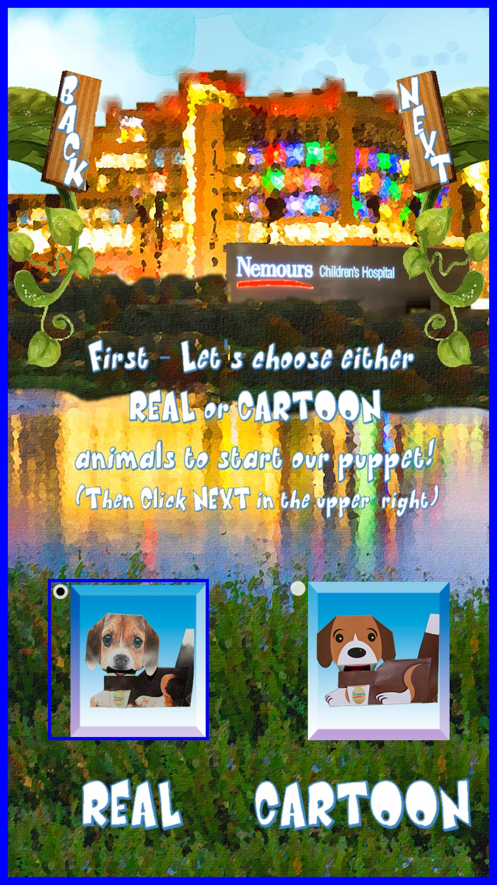
Then choose which type of puppet you want to create.
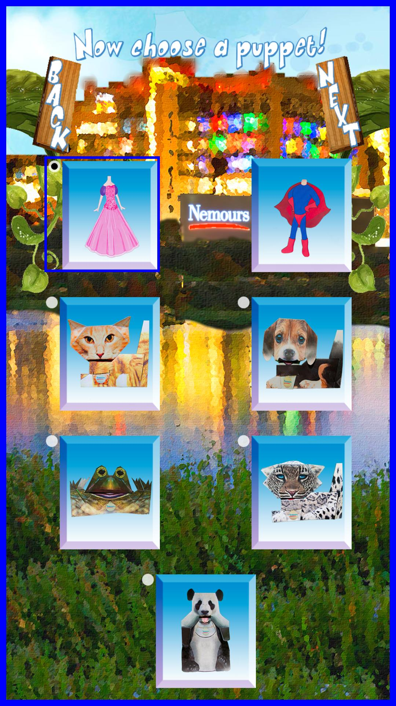
Choose whether you'd like to use a Photo.
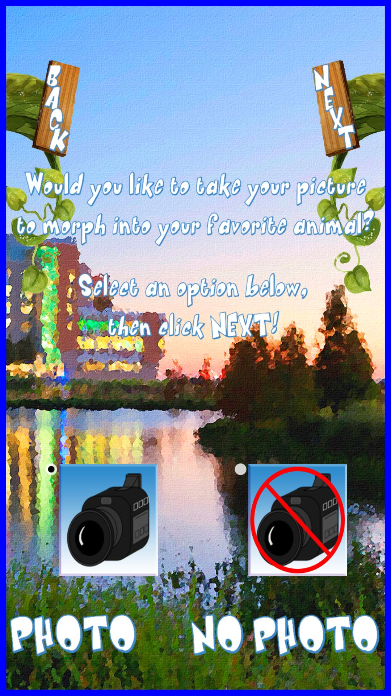
If you do choose to use a photo, you will be prompted to capture the image. You can take a “selfie” using the front facing camera, or you can push the “Flip Cam” button the left side of the screen to switch camera modes and take the picture as you would with a regular camera.
Once the image is captured, you can review it. You can then retake the photo if you are not happy with it, or you can proceed by clicking “Next.”
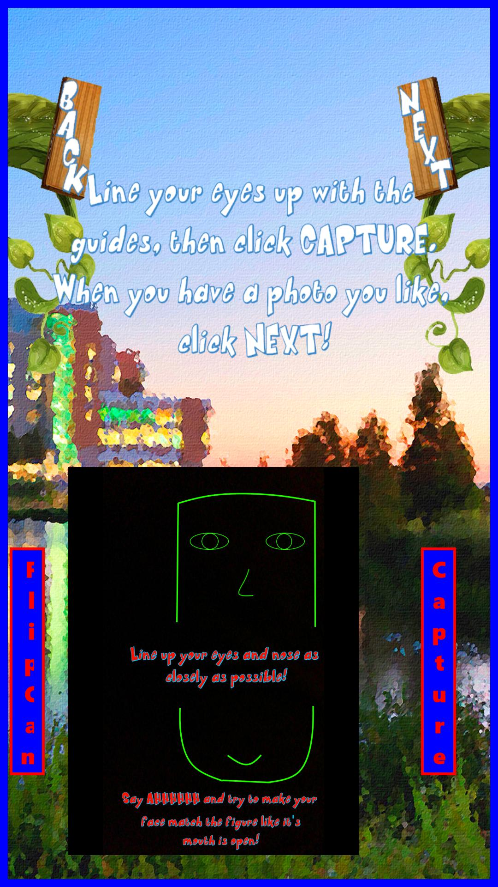
At this point, you can blend the photograph with the puppet template by sliding the bar left or right until you are happy with the appearance.
Note: Using a photo will require that a consent form be printed before proceeding.
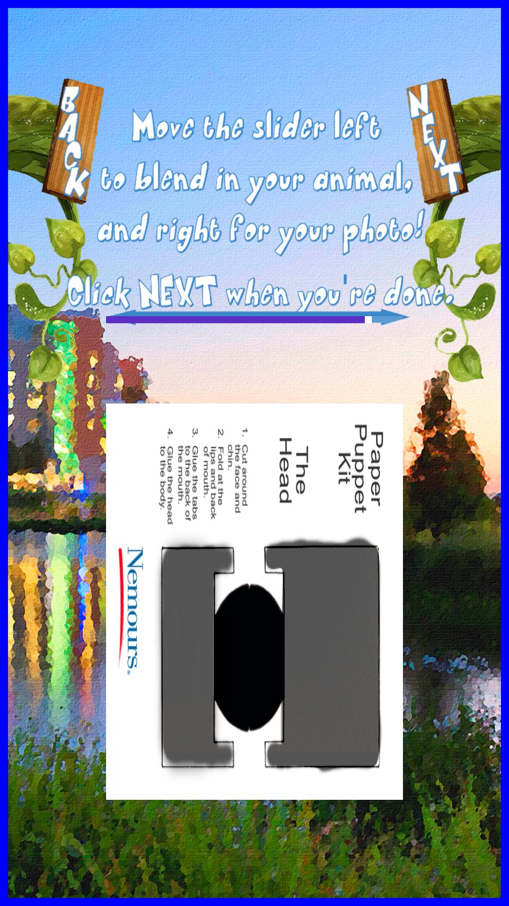
Once your puppet is created, you will be able to print. At this point you will need to take the PuppetKit Plus tablet to the printer and connect it via the provided cable. Once connected, clicking on the “Print” button will allow you to preview the image and alter the print layout if necessary. The Nemours Authorization Form should be printed in Portrait layout, but some puppet heads and bodies will need to be printed in Landscape layout. Print using the Epson printer, and then collect the paper templates to begin construction of you puppet.
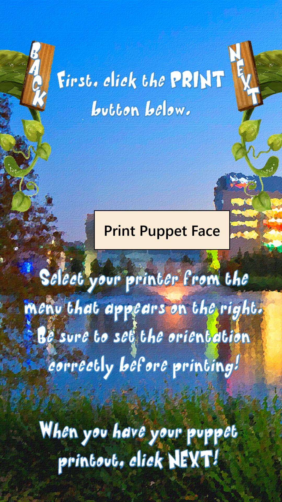
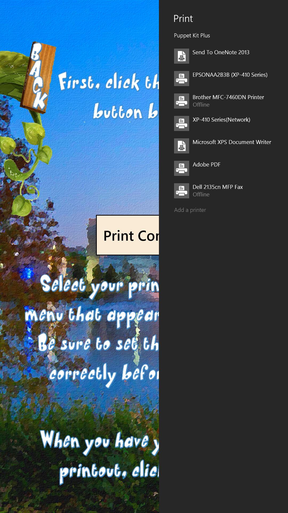
Finishing Up
Store approval forms, and begin constructing your puppet.
Troubleshooting
A Flight to Remember
OK, this has gotta stop. I'm going to remind Fry of his humanity the way only a woman can. We don't have a brig. You guys realize you live in a sewer, right? Throw her in the brig. Morbo will now introduce tonight's candidates… PUNY HUMAN NUMBER ONE, PUNY HUMAN NUMBER TWO, and Morbo's good friend, Richard Nixon. Is that a cooking show?
Bite my shiny metal ass. But existing is basically all I do! As an interesting side note, as a head without a body, I envy the dead. Guards! Bring me the forms I need to fill out to have her taken away! I never loved you. Really?!
- You, a bobsleder!? That I'd like to see!
- Bite my shiny metal ass.
Son, as your lawyer, I declare y'all are in a 12-piece bucket o' trouble. But I done struck you a deal: Five hours of community service cleanin' up that ol' mess you caused. Who's brave enough to fly into something we all keep calling a death sphere? I can explain. It's very valuable. Why would I want to know that?
The Route of All Evil
Michelle, I don't regret this, but I both rue and lament it. These old Doomsday Devices are dangerously unstable. I'll rest easier not knowing where they are. Shut up and take my money! I don't 'need' to drink. I can quit anytime I want! Well, let's just dump it in the sewer and say we delivered it.